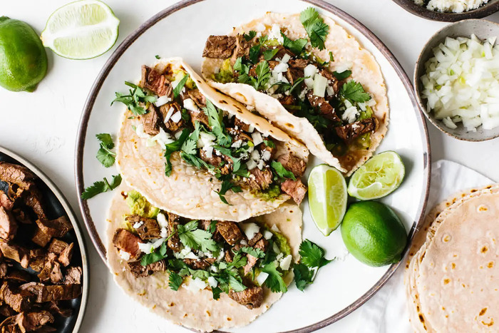

Carne Asada Tacos

Description
This recipe will guide you to make delcious, authentic carne asada tacos. It features a delicious cumin, garlic heavy marinade that is enhanced by the addition of citrus fruits. Keep in mind that the protein we will
be using today is beef. The prep and marinade time will take about five hours, while the cook time is about thirty minutes.
Ingredients
- 2 lbs of flank steak
- 2 lime
- 1 orange
- 1 onion
- 1 bunch of cilantro
- 1 tbsp cumin
- 1 dozen small tortillas
- 1 tbsp garlic powder
- 1 tsp chili powder
- 1/2 tbsp salt
- 1 tbsp of a neutral oil (avocado,canola, etc.)
Steps
- Cut the flank steak into even strips.
- Place the even strips into a bowl or other container.
- Mix the spices together in a small bowl and pour over the flank steak.
- Squeeze the lemon and the orange over the meat.
- Pour the neutral oil over meat.
- Massage the meat and blend all the previous ingredients together.
- Chop up the cilantro and cut the onion into rings.
- Top the marinade with the onion and cilantro.
- Cover the container with seran wrap and place in the fridge for four hours to marinate then remove the bowl from the fridge.
- Fill a bowl with cold water. The bowl should be big enough to submerge one of the small tortillas.
- Heat up a frying pan on medium high heat and another fryin pan on medium low heat.
- Cook the steak strips on medium high for 21/2 minutes to 3 minutes on each side.
- While the meat is cooking, dunk one of the tortillas in the bowl of water then place it in the pan that is cooking at medium low heat for thirty seconds on each side. Repeat this process for all of the tortillas.
- Cut the cooked strips into cubes.
- Pour carne asada into the tortillas and fill each one with a reasonable amount of meat.
- You can serve the tacos now or dress them up with salsas and toppings of your choice.
- Enjoy the meal!